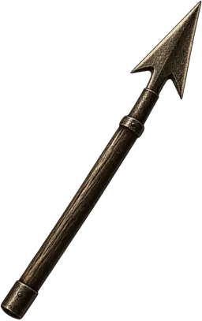

A coordinate hunt of vengeance and fate
The White Whale versus Old Thunder
Choose which side of the last chase you command. Whether you are Moby Dick or Captain Ahab, you have five chances to decide the sea.
Nantucket harbourChristmas DayWhale ship Pequod

The quarter-deck
Choose Moby Dick or Captain Ahab to begin the chase.
Each commander has five chances. Two true strikes win.
Enemy wounds0 / 25 chances left
Latest bearing
No bearing yet
Choose a coordinate. If you miss, the sea reveals a direction and distance.
The sea-chart
Choose a commander before plotting the first coordinate.
ChartG × 7
Use the arrow keys to move between untried coordinates. Press Enter or Space to strike.
Swipe or scroll the chart sideways to reach every coordinate.
Untried water Quarry struck Empty water
Captain’s log 0 of 5 attempts
Your coordinates and the clues you uncover will appear here.